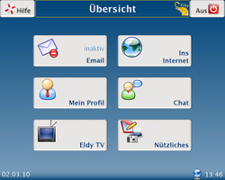

Eldy
Dieser Artikel wurde für die folgenden Ubuntu-Versionen getestet:
Dieser Artikel ist mit keiner aktuell unterstützten Ubuntu-Version getestet! Bitte diesen Artikel testen und das getestet-Tag entsprechend anpassen.
Zum Verständnis dieses Artikels sind folgende Seiten hilfreich:
|  |
| Programmoberfläche |
Eldy 


 ist ein italienisches Projekt, das den Standard-Desktop radikal vereinfachen möchte. Das Programm legt sich über die vorhandene Desktop-Oberfläche und versteckt diese vor dem Benutzer. Angeboten werden nur noch einige wenige Grundfunktionen wie Schreiben von Texten, E-Mail, Chat und Surfen im Internet. Unterstützt wird dieser Ansatz durch sehr große Schaltflächen für die einzelnen Funktionen und eine dementsprechend angepasste, ebenfalls sehr große Schrift. Hintergrund sind die nicht mal ansatzweise vorhandenen Computerkenntnisse älterer oder behinderter Menschen.
ist ein italienisches Projekt, das den Standard-Desktop radikal vereinfachen möchte. Das Programm legt sich über die vorhandene Desktop-Oberfläche und versteckt diese vor dem Benutzer. Angeboten werden nur noch einige wenige Grundfunktionen wie Schreiben von Texten, E-Mail, Chat und Surfen im Internet. Unterstützt wird dieser Ansatz durch sehr große Schaltflächen für die einzelnen Funktionen und eine dementsprechend angepasste, ebenfalls sehr große Schrift. Hintergrund sind die nicht mal ansatzweise vorhandenen Computerkenntnisse älterer oder behinderter Menschen.
Man kann lange darüber diskutieren, ob man der angestrebten Zielgruppe mit diesem Ansatz einen Gefallen tut oder sie nur "dumm hält". Nichtsdestotrotz werden sich immer spezielle Anwendungsfälle finden lassen. Eldy ist in mehr als 20 Sprachen verfügbar. Die Qualität der deutschen Übersetzung ist derzeit eher schlecht, eine überarbeitete deutsche Sprachdatei kann man am Ende dieses Artikels herunterladen.
Nach den nur spärlich vorhandenen Informationen scheint Eldy zwar kostenlos, aber keine freie Software zu sein. Getragen wird das Projekt von der gemeinnützigen italienischen Stiftung "Eldy Onlus". Mit simplicITy gibt es einen kommerziellen Vermarkter, über den die Hardware (Rechner, 19" TFT-Bildschirm, Tastatur, Maus, Lautsprecherboxen oder als Laptop), das Betriebssystem (Linux_Mint) und "Square One" (=Eldy) gebündelt erworben werden können. Inzwischen wird "Envelope" statt "Square One" eingesetzt (Stand: 10/2012).
Hinweis:
Vor dem produktiven Einsatz sollte Eldy für den geplanten Einsatzzweck geprüft werden (siehe auch Kritik). Als Grundlage dieses Artikels diente Eldy 2.2.
Voraussetzungen¶
Eldy basiert auf Java und ist damit unabhängig vom Betriebssystem. Ob das unter Ubuntu präferierte OpenJDK ausreicht oder zwingend Oracle Java installiert sein muss, ist noch unklar (die Entwickler empfehlen Oracle Java).
Darüber hinaus ist die Installation des Flashplayers empfehlenswert. Ansonsten lassen sich einige der in Eldy vorgegebenen deutschen Webseiten nicht vollständig anzeigen. Zur Anzeige der Webseiten selbst wird XULRunner verwendet.
Installation¶
 Die Archivdatei eldyXX.tar.gz
Die Archivdatei eldyXX.tar.gz  für Linux (
für Linux (XX steht als Platzhalter für die derzeit aktuelle Version) herunterladen, entpacken [2], ausführbar machen [7] und nun entweder sofort benutzen oder zur systemweiten Nutzung nach /opt/eldy (der Ordner /opt ist für zusätzliche Software gedacht) kopieren [3].
Hinweis!
Fremdsoftware kann das System gefährden.
Zum Start des Programms im Programmordner von Eldy folgenden Befehl [4] [5] ausführen:
java -jar eldy.jar
Alternativ kann ein Programmstarter [6] angelegt werden.
Einstellungen¶
 Die Einstellungen von Eldy werden beim ersten Start mittels eines Assistenten abgefragt. Diese Abfragen beziehen sich im wesentlichen auf die Einrichtung/Konfiguration eines E-Mail- und Chat-Kontos und sollten von einem erfahrenen Computerbenutzer durchgeführt werden. Das Anlegen eines Chat-Kontos ist freiwillig, auch wenn der Assistent unnötigerweise darauf besteht.
Die Einstellungen von Eldy werden beim ersten Start mittels eines Assistenten abgefragt. Diese Abfragen beziehen sich im wesentlichen auf die Einrichtung/Konfiguration eines E-Mail- und Chat-Kontos und sollten von einem erfahrenen Computerbenutzer durchgeführt werden. Das Anlegen eines Chat-Kontos ist freiwillig, auch wenn der Assistent unnötigerweise darauf besteht.
Um die Einstellungen später überprüfen bzw. ändern zu können, verwendet man die Schaltfläche "Hilfe" links oben in Eldy.
Bedienung¶
Eldy besteht aus folgenden Programmteilen:
Email - Schreiben und Abrufen von E-Mails
ins Internet - vorgegebene Auswahl von Internetseiten (lokalisierte deutsche Auswahl)
mein Profil
Chat - nur innerhalb der Eldy-Gemeinschaft
Eldy TV - vorgegebene Auswahl von Internetseiten (lokalisierte deutsche Senderauswahl)
Nützliches
Notizblock - Schreiben von Texten
Dokumente - Bilder und Dokumente betrachten
Skype - nicht unter Linux
Wetteranzeige (nicht vorhanden - lokalisierte deutsche Version defekt?)
Um Eldy beenden zu können, ist ausnahmsweise ein Doppelklick erforderlich!
Problembehebung¶
Flash¶
Unter Linux gibt es evtl. Probleme beim Betrachten von Internetseiten, da kein Flash installiert zu sein scheint (obwohl es über die Paketverwaltung installiert wurde). Zur Lösung muss einfach nur eine Verknüpfung angelegt werden:
sudo mv /usr/lib/xulrunner/plugins /usr/lib/xulrunner/plugins.old sudo ln -s /usr/lib/firefox/plugins /usr/lib/xulrunner/plugins
Lokalisierung¶
Die Sprachdatei zur Übersetzung der Oberfläche von Eldy liegt im Ordner eldy/lang/<Sprache> (de = deutsch) und heißt lang.eldy. Es handelt sich um eine einfache Textdatei, die den eigenen Wünschen entsprechend angepasst bzw. ausgetauscht werden kann.
Kritik¶
die Mithilfe bei der Entwicklung von Eldy ist freiwillig (ehrenamtlich), das Programm selbst ist aber keine Open-Source-Software
obwohl die Oberfläche von Eldy prinzipiell mittels Themen änderbar sein soll, ist eine Anpassung nicht möglich
das Ändern der vorgegebenen Webseiten und TV-Sender ist nicht möglich
die Hilfe zu Eldy verweist auf italienische Webseiten zur Installation
ein Chat-Konto kann nur auf Eldy.org angelegt werden
während man sich darüber streiten kann, ob zum Beenden von Eldy ein Doppelklick notwendig ist, spottet die Benutzerführung beim Schließen eines Warnfensters im Konfigurationsdialogs jeder Beschreibung - statt dessen muss das Warnfenster selbst geschlossen werden. Kleiner Tipp: das Fenster rechts oben schließen.
Links¶
How-to's Hints and Tips
zur Installation unter Linuxlang.eldy
- überarbeitete deutsche Sprachdatei für Version 2.2
Neuer Linux-PC für Senioren
 - Artikel zum simplicITy-PC auf Pro-Linux, 11/2009
- Artikel zum simplicITy-PC auf Pro-Linux, 11/2009Barrierefreiheit - nützliche Hilfsmittel
- Erstellt mit Inyoka
-
 2004 – 2017 ubuntuusers.de • Einige Rechte vorbehalten
2004 – 2017 ubuntuusers.de • Einige Rechte vorbehalten
Lizenz • Kontakt • Datenschutz • Impressum • Serverstatus -
Serverhousing gespendet von